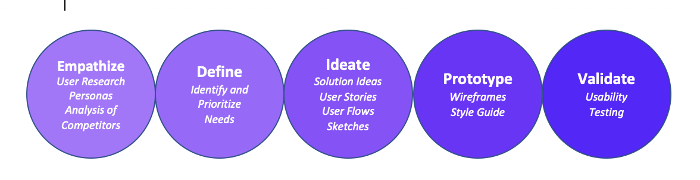
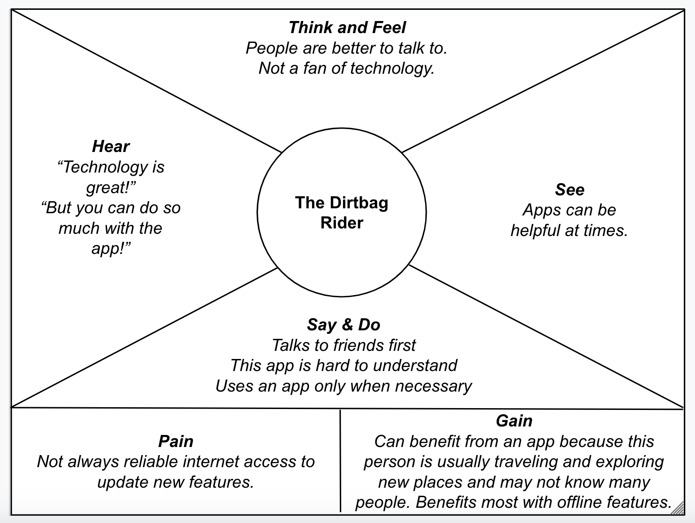

Finding the Best Biking Trails
A UX Capstone Project Exploring How to Improve Communication and the Search for the Best Biking Trails
In the mountain biking world, there are currently two apps that reign supreme, providing the most information about the biking trails. Being out biking often, I noticed that most people preferred using an app called Trailforks, while I always preferred MTB Project. Many regions also have Facebook groups to help connect bikers with each other. I was curious to see where most people went for information and if there was a reason the people around me seemed to prefer one app over another.
The Problem: There are apps providing mountain trail information, but these apps require clicking around a map and eventually settling on a trail. Informational websites allow users to search by features, such as “Best Beginner Trails in My Area”, but these websites don’t combine with maps. Is there a way to bring together everything people need to know in one place?
The Solution: Talk to bikers about their favorite sources of information and what they feel is missing from their chosen solution. Build an app that allows for clicking the map, searching a list, and filtering results while also including a forum where bikers can easily ask questions about trails and conditions.
My Role: I started with a heuristic analysis of competitors. I completed all user research, including a survey and interviews followed by affinity mapping, empathy mapping and personas. Moving forward with a solution idea, I created user flows, sketches, wireframes and a prototype before usability testing and iterating.

User Interviews
In my experience out mountain biking, I had noticed more people using TrailForks, but I created a survey to determine if my supposition was true. In a survey of fifteen people, more people did in fact use TrailForks, but it was only ten interviewees compared with nine who used MTB Project. This included four who use both apps regularly.

I also found that 3 out of 15 people liked to get most of their information from social media and 10 people still prefer getting most trail information through word of mouth from their friends.
I explored this further with interviews of three people. While all three like to talk to friends and get personal recommendations of where to ride, all supplemented with one of the two apps. Only one admitted to preferring information available online, enjoying the overall volume of information available through multiple sources. For the two who seek out the majority of their information from friends, they not only want someone who knows their abilities and riding style but who also can answer any questions they may have.
Analysis of Competitors: What's Missing?
Overall, MTB Project is straightforward and easy to use. It’s a little strange to only have the forums available online, not through the app. Users can search for specific trail names or click around to explore different trails, but there are no options to filter based on trail features*.
*While working on this project, MTB Project was in version 3.9. Following completion of my capstone project, MTB Project updated to version 4.0.1, which implemented a filter feature for the first time, similar to the filter I had designed during my project.
TrailForks provides a lot of information about trails and a few different search and browse options. The main screen tends to be very crowded and the maps do not put trails together into routes unless the user searches in a specific area. Also, this app provides some filters to aide in the trail search but does not give many filter options. The app can be connected to Strava, a mile tracking service, and riders can donate money through Trail Karma. The website has feeds of rider activity but no forums for discussions. However, PinkBike, who operates TrailForks, has forums and biking news.
Synthesizing User Research
Empathy Maps

Personas
Pain Points and Ideation
Pain: People don’t want to use an app that requires a lot of effort.
Brainstorm: How might we create one-click access to information?
Idea: Let’s create a filter feature that allows users to find exactly the type of trail that they are interested in riding.
Pain: Even though they see the benefits of using an app, most people interviewed and surveyed still find it most useful to talk to a person, whether that is a friend, bike shop employee, or stranger in a Facebook group or online forum.
Brainstorm: How might we provide a platform that allows all riders to ask questions and get recommendations, even if they don’t have a friend who is familiar with the area?
Idea: Let’s make a forum that connects directly to the trail information app, allowing all users to ask questions and get answers based on their area.
Pain: Trail conditions are regularly fluctuating based on the time of year.
Brainstorm: How might we improve communication, allowing all riders to quickly and easily share trail information?
Idea: Once we have created a discussion forum where everyone can ask questions, we can build an alert feature, allowing users to know exactly when their favorite trail is good to go.
Initially brainstorming for this project, I had been primarily interested in creating a filter that allows users to easily find trails based on specific features, including elevation gain, distance, and difficulty. I had not yet seen this exist anywhere and knew that as a user myself, I would certainly appreciate a filter. As I wrapped up my capstone project, MTB Project released an update which created this filter. However, through surveys and interviews, I found that most people still like having someone to talk to and ask questions, leading to a forum option.
Users want to be able to communicate with friends and strangers in much the same way. While friends will know them better, the important aspect of the minimum viable product is the ability to easily communicate with anyone. A good way to create groups will be by location. We want to allow users to ask clear questions and have other users respond in a timely manner. We also want a quick and easy way to get updates about trails, maybe by searching for the mention of this trail or by creating an alert to receive a push notification if a trail is mentioned in the discussions.
Speaking to people at an outdoor event, my biggest insights involved the discussion page. Everyone I spoke with uses social media regularly, but they all had slightly different ideas. One person was concerned about how to block haters. I want the discussions to be open to everyone, with users joining groups based on location. However, I will certainly need to account for protecting users from hateful speech maybe by setting some parameters and monitoring what is posted. I also need to determine how posts will flow. I think chronological will be best but one interviewee also supports upvoting, similar to Reddit, so that is worth considering.
My other big insight is that I need to find a few more ways to connect everything. I asked interviewees how they felt about the discussion and search features and one asked if the discussion could link directly back to the map. I think it would be helpful to add hyperlinks anytime someone in the discussion mentions a specific trail. The link could connect to either the trail on the map or the description of the trail itself. Thinking through this also made me realize that I had not made any sketches of trail description pages and will need to add this to my red routes.
Wireframes, Prototypes and Usability Testing
| Concerns |
Second Iteration Updates |
| Elevation information is good, but could the trail information be broken down to allow for quick scanning. |
Bullet points on top with a more detailed description below. |
| Would be nice to be able to view trails on the map and also as a list. Even better if the trails can be viewed with basic features so that user can compare quickly. |
Created a trail list with distance and elevation to allow for quick viewing and comparisons. |
| Want to navigate directly from trail information back to the discussion forum already filtered to information about this particular trail. |
Added a button to link directly from trail information back to discussion. Ideally, the discussion would also link directly to the map if a particular trail is mentioned. |
| Want to be able to save trails and find them right away. |
“Favorite” option to save trails to one’s profile. |
View the clickable prototype HERE